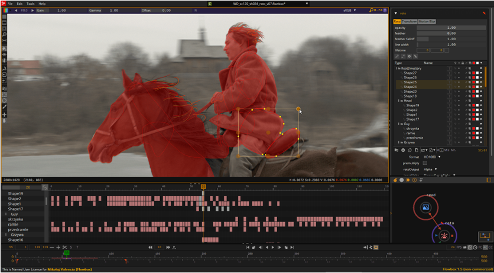
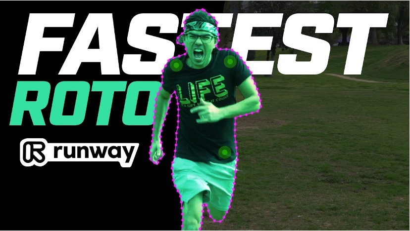
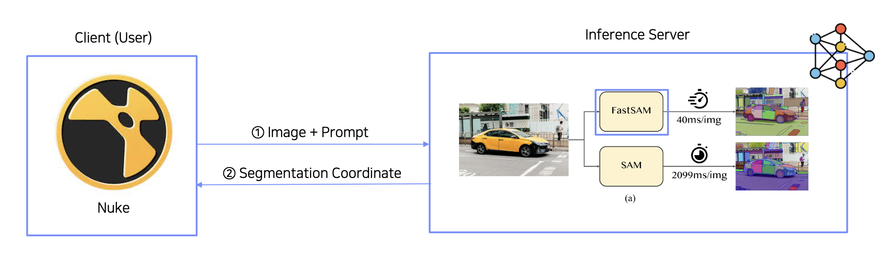
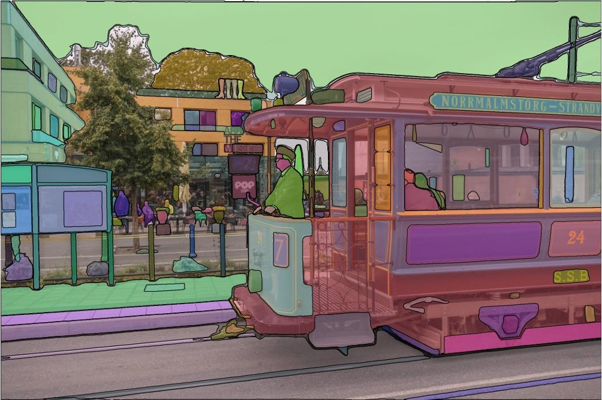

Rotoscoping is the process of tracing an object frame by frame to isolate it from the rest of a video, the kind of work compositors rely on to pull out a person, vehicle, or product for VFX and editing. Done by hand, it's one of the slowest, most repetitive tasks in video post-production. A single shot can take hours of manually placing and adjusting spline points on every frame.
For client MediaCan, I built a FastSAM-based FastAPI inference server and packaged it as a plugin for Nuke, the industry-standard compositing software. A compositor types a plain-language prompt describing the object (for example, "black dog"), and the plugin returns a Bézier-curve mask generated directly inside Nuke, replacing the manual tracing step entirely for the objects it targets.

Manual rotoscoping — every shape hand-traced and keyframed across the timeline
The end goal — a clean matte that isolates a subject from its background
Nuke sends the frame and text prompt to the inference server, which returns segmentation coordinates back into the compositing scene
What SAM-family models do — segment every object in a frame into a distinct region, which the plugin narrows down to just the one matching the promptFastSAM was chosen over the original SAM specifically for this gap: at roughly 50× the speed, it keeps prompt-to-mask generation fast enough to fit inside a compositor's normal workflow instead of becoming its own coffee-break wait.